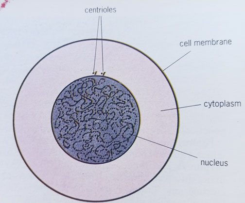
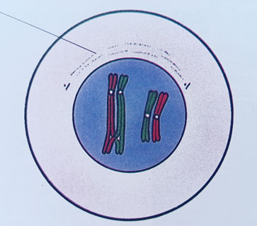
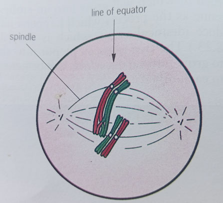
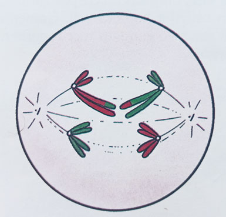

Telophase I
By the end of this lesson, you should be able to:
Meiosis is divided into Meiosis I and Meiosis II.
The main purpose of meiosis I is to separate homologous chromosomes. It involves the following stages:

Interphase

Prophase I

Metaphase I

Anaphase I
Telophase I

Cytokinesis I
Meiosis II is similar to mitosis. It main purpose is to separate sister chromatids. It involves the following stages:

Prophase II

Metaphase II

Anaphase II

Telophase II

Cytokinesis II
Meiosis is a type of cell division that reduces the chromosome number by half, producing four genetically distinct haploid cells. It involves two sequential divisions, Meiosis I and Meiosis II, each with distinct stages.
The main purpose of meiosis I is to separate homologous chromosomes, while meiosis II separates sister chromatids.
Meiosis occurs in the gonads of animals (testes and ovaries) and in the anthers and ovules of plants, playing a crucial role in sexual reproduction, genetic diversity, and maintaining chromosome number across generations.